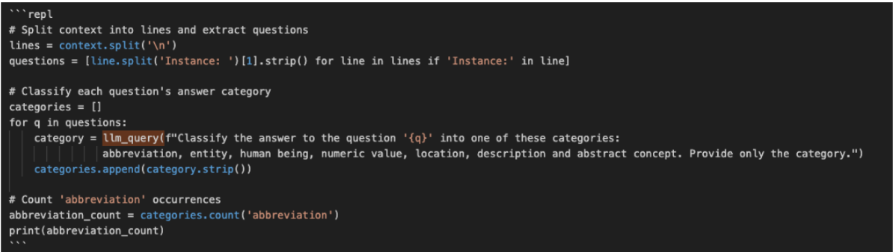
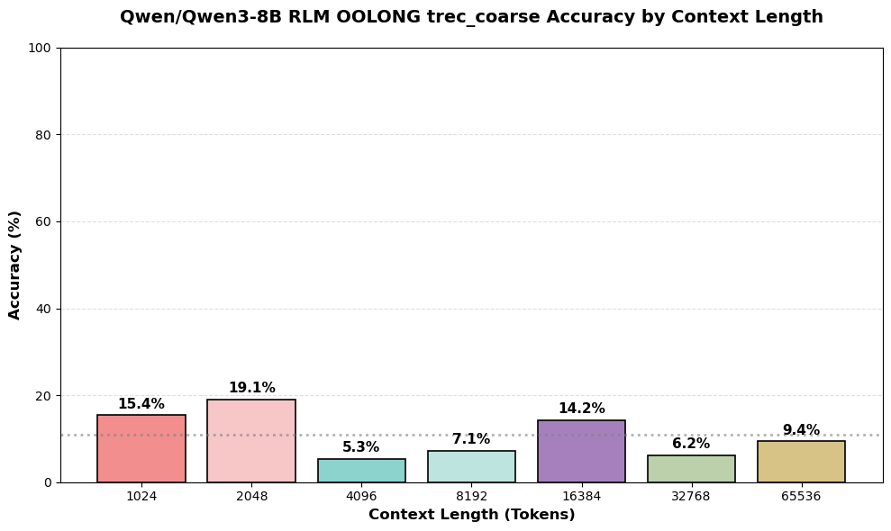
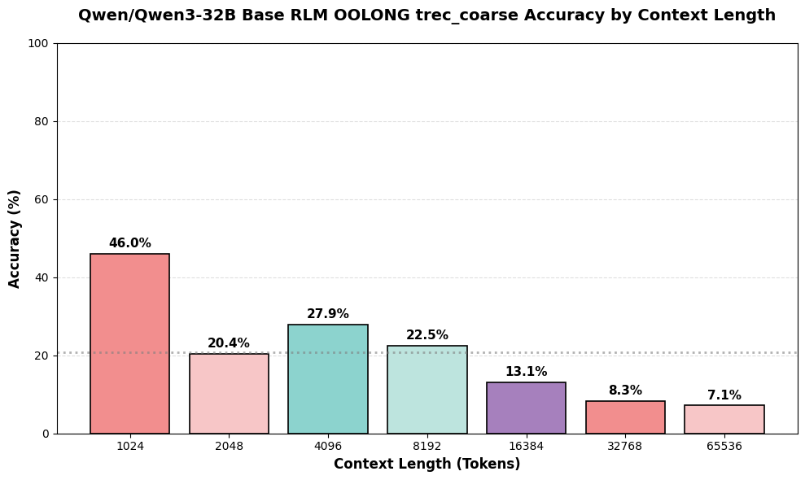

We asked our LM to generate an image representing SLMs competing on par with LLMs
Introduction & Motivation
Beginning around 2020, Large Language Models (LLMs) have seen significant improvement in their capabilities and performance at an unprecedented pace. Paradigms such as chain-of-thought (CoT) and ReAct have sparked numerous advancements in LLM abilities to reason & take actions when answering or solving prompts. Today, current state-of-the-art (SOTA) models boast impressive performance in many areas, from mathematical & problematic reasoning, to creative expression in writing and art, to writing code. Driving these improvements forwards is the theme of “increasing scale” that has largely influenced experimental and technical decisions. Under this ideology, many of the recent improvements to LLM capabilities can be attributed to increasing the scale of model sizes, increasing the scale of dataset used to pre-train LLMs, and increasing scale in the amount of context LLMs can handle.
Given current LLM capabilities, the deployment scene sees LLMs being increasingly implemented in diverse domains. As users are continuously increasing the breadth of applications LLMs are integrated with and the depth of their functionalities, successful deployments require LLMs to be able to handle long contexts and precise focus over long time horizons. This occurs because many of the applications LLMs are integrated with have primary objectives that require many components and span over long durations. Over time the pursuit of these objectives builds up potentially enormous amounts of these components that together form a context that often cannot be processed in a single instance. Yet, effective processing of this context is necessary for achieving the primary objective. As a result, an LLM’s effective integration depends significantly on its ability to precisely focus on goals over long timeframes or context horizons as they become more integrated in agentic and system work flows. This nature provides a reason for desiring LLMs that can effectively extract relevant information from large amounts of context. Harking back to the theme of increasing scales, researchers and industry have placed significant focus on tackling this challenge through increasing the size of LLM context windows from ~16k tokens (GPT 3) to ~400K tokens (GPT 5) for many of the SOTA models. This approach follows the notion that, if an LLM can accept as an input the entire context present for an objective, we can instead leverage the attention mechanisms of LLMs to process the context rather than preprocessing the context before it is passed as input. Even though this approach has been shown to perform well on benchmarks testing LLM recall on large contexts, in practice users experience the well-known phenomenon called “context rot” that plagues this approach. This phenomenon describes the experience whereby as the amount of context provided to the LLM increases, the LLMs intelligence over the context and with respect to its objective seems to degrade. With this failure mode being historically difficult to both describe and benchmark, it has required research to approach this issue from empirical intuitions.
Researchers have investigated a variety of methods to mitigate performance degradation during long context inference. Most recently, (Zhang, 2025) proposed the paradigm of Recursive Language Models (RLMs), which we explore further in our work. In this paradigm, an RLM is an LM that is capable of issuing sub-LM calls for intermediate computation. The RLM is only provided the user’s query or problem statement, and is provided the context as a variable in a Python REPL (code execution environment). The LM is prompted to engage with the REPL to write code to examine its content and issue sub-LM calls however it sees fit. Because of this framework, RLMs can engage with context well beyond their context limits without ever needing to ingest the full context and are only limited by the environments available memory. This paradigm leverages two of the most forefront paradigms in LM intelligence: CoT-based reasoning and LMs are powerful coders. Intuitively, the appeal of RLM inference is its environment where an LM can leverage its reasoning and coding skills. After engaging with the REPL and issuing sub-LM calls the model is prompted to provide a final answer. Zhang reports outstanding results using the RLM framework on long context tasks, but only tested the paradigm on large closed source frontier models. This inspires the question, how small or weak can RLMs be? Do smaller models benefit from using the RLM framework?
Related Works
Building up to the RLM paradigm, previous studies point to the experience of “context rot” to be genuine and not solely the user's perspective despite its notorious difficulty to benchmark. Using a more formal definition, “context rot” describes the relationship that as the number of tokens in the context window increases, the model's ability to accurately recall information from that context decreases. Researchers from Anthropic find that this characteristic arises due to the limited “attention budget” that gets stretched thin when a model has to capture pairwise relationships within large contexts (Effective Context Engineering for AI Agents, 2025). Furthermore, Liu et al., observe that LLMs exhibit a U-shaped performance curve with respect to the placement of information within a long context. This performance curve demonstrates that when task relevant information is placed in the middle of a large body of context rather than at the beginning or end, LLMs perform significantly worse on their tasks (Liu et al., 2024). Techniques such as position interpolation (Chen et al., 2023) that have been used to increase context window sizes also offer architectural insights into these degradation observations. Given that LLMs are often trained on comparatively smaller sequences then architecturally interpolated to handle large contexts, the attention patterns developed on the shorter sequences begin to struggle once the input sequences become much larger. Such insights are demonstrated in (Liu et al., 2024) findings, where findings show that performance on the Flan-T5-XXL model instruction-tuned on sequences of 2048 tokens, begins to degrade when handling context longer than 2048 tokens. In light of this, prior research has developed techniques to mitigate these limitations from a model architecture design perspective. For example, (An et al., 2024) introduce String positional encoding (STRING) an approach to mitigate the tendency for learned token position frequency distributions to be left-skewed due to undertraining on long sequences. This left-skewing phenomenon hinders LLM performance on long-range tasks. While STRING and similar approaches are shown to improve LLM performance on long contexts, limitations remain as their effectiveness is bounded by architectural constraints from which gains begin to diminish once exceeded.

Given the limitations of previous approaches, (Zhang, 2025) introduces Recursive Language Models (RLM) as a new, promising paradigm. This approach centers around the notion that LLMs can be treated as blocks for managing context and by recursively dividing some context across two LLM calls then combining their outputs using a third LLM call, we can avoid this degradation that occurs with inputting large context. Zhang’s work shows that RLM is an effective approach for ensuring minimal working context when answering prompts. Additionally, initial findings show RLM to out perform previous reasoning strategies on long-context tasks and that LLMs can employ recursive strategies such as peeking, partitioning, grepping, and finally summarizing long contexts to derive an answer. These together reveal the potential of RLM to mitigate context rot. However, the findings are limited only to tests on GPT-5, which by current estimate is significantly larger than many of LLMs currently in application. Therefore, to generalize RLM for context management it is necessary to understand its effects when implemented with smaller models. Furthermore, it is necessary to understand the thresholds while LLMs are no longer able to make use of this framework.
Figure 1: Diagram of the RLM environment for a recursive depth of one (Zhang, 2025)
[1]
Our Goal
In this work we expand on the developments of RLMs to investigate the potential of RLM as a context managing strategy for LLMs of much smaller size. Additionally, we investigate whether reinforcement learning strategies can be applied to elicit good recursion strategies. Drawing from the initial observations from (Zhang, 2025), recursion strategies appear to emerge from the largest models. However, we seek to explore whether through reinforcement learning if these strategies are also effective for smaller models and what other strategies might emerge that are more suitable for a smaller LLMs.
Methods
We first perform an ablation study to understand the effect of the RLM framework on smaller open models. For this instance, we choose Qwen3-8B for its impressive reasoning and coding capabilities at only eight billion parameters. Given that the model will be asked to reason and code across multiple steps, it makes sense that a model whose baseline is strong at coding and reasoning tasks would serve well as an RLM. We implement the RLM framework with the generously provided scripts from (Zhang, 2025).
Zhang provides an RLM prompt that instructs the model to format code blocks to be executed in a Python REPL, scripts for parsing out and executing code blocks, and a framework for evaluating sub-LLM queries. We modified Zhang’s script to use the Tinker API for all inference. We also modified the system prompt to provide more guidance on how to approach and properly format answers for the classification problems.
We then fine-tune Qwen3-8B and Qwen3-32B through Reinforcement Learning on long-context tasks from the OOLONG dataset and evaluate its performance on a hold-out set. Particularly, we use the tools and frameworks provided by the Tinker API from Thinking Machines taking inspiration from their various reinforcement learning environments. The fine-tuned model is then evaluated on the same hold-outset.
you can move the margin notes up and down with translate
Dataset
To maintain consistency with (Zhang, 2025) we also utilized a subset of the OOLONG dataset (Bertsch et al., 2025). OOLONG is a recent dataset that aims to quantify the performance of LLMs on long context counting, search, and aggregation tasks. The dataset contains examples of somewhat realistic long contexts where current LLMs are still known to struggle on. OOLONG examples contain a context, query, and the expected answer to the query. The context length scales from 1K tokens to 512k tokens. With this dataset models are tasked with utilizing information in the context to answer the query
OOLONG contains two distinct datasets: oolong-synth and oolong-real. The synth dataset has contexts that are aggregations of examples from existing datasets, and real is transcriptions of Dungeons and Dragons campaigns that the authors processed. For consistency with (Zhang, 2025) we also choose to utilize oolong-synth. The oolong-synth dataset is composed of two subsets. The first subset, trec_coarse, contains samples for question type classification. The second subset, spam contains questions for SMS spam classification. Beyond being a good collection of long-context problems, OOLONG provides queries that require the model to perform some sort of “fuzzy” inference, they are not just tasks that can be solved with pure code. We believe this is imperative for learning how to use recursive model calls effectively.
We delineate the spam subset to be our reinforcement learning training set due to its variety of questions related to SMS spam found in the dataset and its variety in answer granularity. We hypothesize that this will require LLMs to learn good strategies for handling different types of questions, that can then generalize outside of the dataset.

Following Zhang (2025), we employ the trec_coarse subset of the oolong-synth benchmark for evaluation. This task requires the model to classify records into one of six categories, followed by aggregation or counting operations. We aim to evaluate context sizes ranging from 0 to 64k tokens. However, while the Qwen3-8b technical report notes a 132k context window (via YaRN), the Tinker API does not support this extension and enforces a fixed 32k limit. Consequently, we restrict the LLM-only baseline to a maximum context of 16k tokens. In contrast, our RLM framework allows us to bypass this limitation, enabling evaluation across the full target range, including 32k and 64k contexts.
For training, we utilize the oolong-synth spam subset. This dataset mirrors the structural style of the evaluation set (aggregating email logs) but poses a simpler binary classification task ("ham" vs. "spam") compared to the six-class evaluation task. We selected this specific pairing to minimize the difficulty of the classification task, thereby encouraging the model to prioritize the development of RLM retrieval strategies over complex classification logic. We trained on the full spam subset, comprising 650 examples with context lengths ranging from 1K to 4M tokens.
Figure 2: Example context for an input with 1028 tokens of context from the OOLONG-synth dataset. Here a model is queried to consider the subset of instances that are associated with user IDs 76063. Among instances associated with these users, the model is taked with finding if the label 'ham' more common, less common, or the same frequency as label 'spam'?
[2]
Hyperparameters & RL Environment Design
We utilized the modified 'importance_sampling' policy gradient objective from the Tinker-Cookbook. This approach aims to mitigate sampling bias, which arises when the sampling policy q diverges from the learner policy p.
We selected this objective over PPO or other standard RL formulations due to its established efficacy in the Tinker-cookbook examples, particularly for multi-turn tool use and code generation. We also adhered to the default learning rates recommended by the Tinker API for Qwen3 without modification.
The training set is first shuffled and divided into batches of 32. For each problem in a batch, we generate a rollout group of 8 samples. We compute the advantage for each trajectory by subtracting the group’s average reward; this effectively reinforces trajectories that outperform their specific group peers.
In each episode, we initialize a fresh RLM REPL environment containing the context. The policy receives only the system prompt and the query, interacting via code blocks for up to ten turns. To ensure computational feasibility, we enforced a five-minute timeout on both sub-LLM queries and code execution. Without these constraints, early experiments showed individual episodes stalling for over an hour. If a timeout occurs, the model receives specific feedback and is permitted to continue.
We employ a sparse reward signal: the model is rewarded solely at the conclusion of the trajectory. Correct answers receive a score of 1.0, while incorrect answers receive 0.0.
Experiments
Using this RL environment, we perform an ablation study on both the Qwen3-8B and Qwen3-32B models. We include the Qwen3-32B model to further investigate the impact of model size on RLM effectiveness, while aiming to control for factors such as architecture design that might arise if we were to compare Qwen3-8B with models from other organizations. For each model, we evaluate a baseline performance on OOLONG trec_coarse samples with context sizes starting at 1024 tokens, and doubling up to the model’s maximum context window of ~32K. We then evaluate each model integrated with a base implementation of RLM on the same set of tre_coarse samples but increase the maximum context up to 64K tokens. Extending the max context beyond 32K tokens to give an initial indication on how well the LMs can handle contexts larger than their context windows. Lastly, we evaluate each model after training with the RL environment described above on trec_coarse samples with context sizes up to 64K. Across each experiment we measure the model’s performance using an exact string matching between the model’s final output and the ground truth answer after normalizing each according to the OOLONG dataset. From comparisons between the base RLM model and its RL-trained counterpart we aim to reveal the impact of RL on the model’s abilities to effectively use the RLM framework. Further comparisons with the baseline results examine under which conditions small LMs benefit from RLM. Finally, we analyze the recursive traces between the base RLM and RL trained RLM to understand the impact of RL on the models' strategic decisions for managing context.
Trace Analysis
We first analyzed notable traces from both successful and failed trajectories on the OOLONG trec_coarse tasks.
LLM Baseline
Due to context constraints, the LLM-only evaluation was restricted to a 16k limit. While the model performed internal reasoning over the data points, it exhibited a high rate of classification error. Our analysis indicates that these failures stem from excessive self-doubt: the model frequently second-guesses itself, altering its classification as the reasoning trace extends. We observed no other quantitative anomalies correlated with context size.
RLM Dynamics
We observed substantial performance degradation during the RLM experiments, driven by two primary behaviors. First, the model tended to saturate its own context window. Despite output truncation safeguards, the model persisted in recursively printing large chunks of context data into the REPL. Second, the model struggled with unlabeled data. When queried to quantify attributes like "spam," it frequently entered a refusal loop, claiming that "without explicit labels... it is impossible to determine frequency," rather than attempting the necessary classification.
Crucially, the model often identifies a valid strategy: using code to chunk the context and delegating classification to a sub-LM. However, the execution is brittle. The model often makes rigid assumptions about the sub-LM's output, for example, expecting a single word (e.g., "abbreviation"), and fails when the sub-LM returns a full sentence, invalidating an otherwise correct strategy.

A significant source of failure during the RLM evaluation stemmed from code and API timeouts. To prevent evaluation times from exploding, we enforced a strict five-minute cap on execution. Unfortunately, this penalized trajectories that showed genuine reasoning promise, such as iterating through content or managing sub-LM calls, resulting in scores of zero simply because the process exceeded the time limit.
RLM RL
While the RL baseline suffered from standard issues like context exhaustion, we observed a unique emergent behavior: the model began iteratively designing code exclusively within the REPL format. This approach generates numerous code blocks in a single response. Because the current RLM setup executes every code block sequentially, the cumulative runtime of 10 or more redundant blocks inevitably triggers a timeout.
Furthermore, the model remains susceptible to context exhaustion, often exacerbated by the redundant printing of verbose content within these blocks. It also remains constrained by unpredictable API latency. Most notably, however, we observed instances where the model devised a viable strategy, yet stochastic variability in the sub-LM calls introduced slight numerical inaccuracies, causing the final answer to drift.
Figure 3: Example output trace using RLM where the model first splits lines into questions then uses a recursive call to categorize questions
[3]
Quantitative Analysis

The base LLM demonstrates somewhat decent performance on tasks requiring up to 16k context, achieving a mean score of 34% across all context sizes without exhibiting significant signs of context degradation. While this trails the 50–80% range achieved by frontier models on the full OOLONG synthetic dataset (at 1k–16k), the model’s performance remains consistent with expectations for its class.

Unexpectedly, applying the RL framework yielded a significant performance degradation. We observed an average drop of 62%, with the most severe regression, an 88% decline, occurring at the 4k context length. Qualitatively, the model struggled with the absence of discrete labels, resulting in context overload and generation steps wasted on redundant content indexing. The framework also introduced new operational failures, including frequent iteration exhaustions and code execution timeouts. We hypothesize that the 8B base model, lacking prior SFT or RL, possesses insufficient “RLM reasoning prior” to navigate this framework, leading it to pursue futile and inefficient trajectories. We investigated why the model did not simply ingest the full context and reason directly. We attribute this behavior to the RLM system prompt, which strongly biases the model toward tool usage inadvertently diverting it into unproductive reasoning trajectories.
Due to persistent infrastructure challenges, including frequent restarts, API instability, and rate limits, the Qwen3-8B training run was truncated, completing only 16 of the planned 21 steps. Despite this partial run, we observed marginal gains in long-context tasks, with performance improving by 6% at the 32k context window and approximately 3% at 64k. We also found that RL successfully recovered some of the accuracy lost when applying the RLM framework. Post-RL, the model showed improvement at shorter contexts; however, it still underperformed the baseline LLM at longer contexts. While these results provide a 'proof of signal' that RL can drive improvement, they also suggest that our current environment configuration, hyperparameters, and training length remain suboptimal. We provide the reward trajectory for our 8B RL run and notice that it is quite noisy. It generally increases, but it is still rather noisy and we never see the reward plateau.


We also conducted a similar RL run for Qwen3-32B. We theorized that a larger model would eliminate some of the basic understanding driven failure modes we noticed with 8B. The base 32B model has much stronger baselines at LLM-only inference compared to the 8B. Yet, similar to the 8B model, adding the RLM framework causes accuracy degradation over all context lengths. Due to time constraints we were only able to run the 32B RL RLM on 16-65K context lengths. Yet, similar to the 8B model we notice an improvement after training. In this case, we notice an oddity that the performance at 16K tokens decreased, but training doubled the accuracy at 32K and 65K context sizes. We note again that this model was not trained to completion and missed a few steps of training. Yet, this corroborates the idea that the RLM framework isn’t always positive but its accuracy degradation can be recovered.

Figure 4: Baseline results show models performance relatively well when able to accept the full context as input
[4]
Figure 5: Base RLM results show models performance drops significantly across all context lengths
[5]
Figure 6: After training RLM using RL, results show that Qwen3-8b was able to recover performance across context lengths.
Mostly notabily performance over contexts of 1024 tokens surpases that of the baseline.
Improvements on context lengths over ~32K show promising potential for RL to elicit good recursion strategies
[6]
Figure 7: Baseline, Base RLM, and RL trained RLM results for Qwen3-32B
[7]
Limitations & Implications
Limitations
We acknowledge one of the major limitations to our results arises due to the number of RL steps we trained the RLM models for. Given for each rollout the RLM can make multiple recursive calls, RLM completions tend to greatly increase the generation time from seconds to minutes and at times hours. Consequently we could only complete a relatively small number of RL steps to the RLM models and remained in the realm where the total rewards fluctuated around a value. While we employed execution timeouts, penalizing excessive code generation and excessive thinking, we believe that our runs still constituted being in the early stages of extracting benefits from RL. We realize that this ends up killing potential signals that may boost learning the necessary priors to successfully use the RLM framework. As a result, we hypothesize that the number of RL steps we ran were likely not sufficient for the model to solidify good strategies from those rollouts that generated positive signals. Additionally, we acknowledge that further exploration into the reward system used for RL is crucial to determining how best to elicit good recursive strategies. Our approach takes a binary rewards view to rewarding correct answers and penalizing incorrect answers and problematic behaviors. However, we hypothesize that using more detailed rewards, for example, penalizing based on the number of recursive calls to encourage using efficient recursive strategies could be more beneficial to elicit good behavior.
Implications & Future Works
Our experiments demonstrate a tangible barrier preventing small open models from effectively utilizing the RLM framework out-of-the-box, though our results suggest that targeted RL or SFT interventions could bridge this gap. Crucially, this work highlights the extreme sensitivity of the RL environment. Balancing reward design, stop conditions, and timeouts against the tension between model exploration and training runtime remains a formidable challenge. We believe that we would have outperformed the base LM had our training run finished. Yet, our graphs still show that our model's performance severely degrades as context length increases despite applying the RLM framework which we hoped would maintain its performance constant.
Due to the limited variety of rewards and problem types tested, it remains unclear whether the model developed robust RLM skills or simply learned to satisfy the specific constraints of the OOLONG benchmark. Yet, our traces imply that at times good RLM style strategies were employed.
RLMs are inherently more complex than standard LMs, requiring multi-step reasoning, code generation, and semantic commands for external models. While prior work confirms that frontier models can leverage this architecture effectively, our findings suggest that smaller models struggle to achieve parity. The increased inference overhead and structural complexity introduce numerous avenues for design inefficiencies and engineering bottlenecks. Ultimately, while RLMs hold immense promise, unlocking their full potential requires substantial investment in engineering and hyperparameter optimization for stable training.
We also believe that bootstrapping with "golden" RLM traces from frontier models, such as GPT-5, could prove useful. Conducting a short, targeted SFT run on these expert trajectories would establish stronger priors, teaching the model to navigate the RLM framework effectively from the outset. We hypothesize that this initialization would refine the model’s reasoning strategies earlier, yielding superior performance in both the pre- and post-RL stages.
Moving forward, we plan to refine the RL environment to better handle execution latency. Rather than enforcing rigid per-step timeouts, we propose implementing a global trajectory time budget. In this setup, the wall time of each step is deducted from a total allocation until the budget is exhausted or a final answer is reached, allowing the model to allocate time more dynamically.
We also see significant potential in shifting from sparse, binary outcomes to dense rewards. Future iterations could incentivize correct formatting and effective llm_query usage, while penalizing excessive REPL overhead on short-context tasks. This design space remains largely unexplored and offers a promising avenue for stabilizing training.
Finally, we intend to test diverse problem formulations to better understand the emergent strategies models use for task chunking. Regarding infrastructure, while the Tinker API provided a seamless interface for distributed training, persistent instability, including disconnects and rate limits, frequently disrupted our experiments. Resolving these reliability issues will be critical for scaling future runs.
References:
[1]
An, C., Zhang, J., Zhong, M., Li, L., Gong, S., Luo, Y., Xu, J., & Kong, L. (2024).
Why Does the Effective Context Length of LLMs Fall Short?
ArXiv.org.
[2]
Bertsch, A., Pratapa, A., Mitamura, T., Neubig, G., & Gormley, M. R. (2025).
Oolong: Evaluating Long Context Reasoning and Aggregation Capabilities.
ArXiv.org.
[3]
Chen, S., Wong, S. H., Chen, L., & Tian, Y. (2023).
Extending Context Window of Large Language Models via Positional Interpolation.
ArXiv (Cornell University).
[4]
Effective context engineering for AI agents. (2025). Anthropic.com.
[5]
Liu, N. F., Lin, K., Hewitt, J., Paranjape, A., Bevilacqua, M., Petroni, F., & Liang, P. (2024).
Lost in the Middle: How Language Models Use Long Contexts.
Transactions of the Association for Computational Linguistics, 12, 157–173.
[6]
Zhang, A. L. (2025).
Recursive Language Models.
Alex L. Zhang.